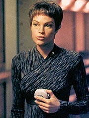
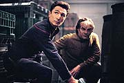
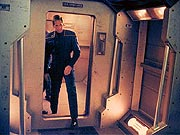
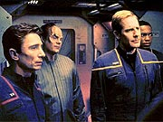
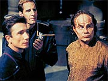
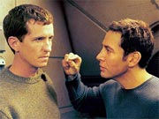
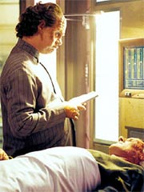

|
MANCHETE
DO EPISDIO
Segmento
mostra vida em cargueiros,
mas falha em desenvolver Mayweather
Episdio
anterior | Prximo
episdio
Sinopse:
O almirante Forrest contata a
Enterprise para passar novas ordens ao capito Archer. Ele
lamenta informar, mas est tirando a nave de sua misso exploratria,
para que ela possa ir de encontro ECS Fortunate, uma nave
cargueira da Terra que est enviando um sinal de socorro. Por ser
a nica nave da Frota com capacidade de dobra 5, s ela poderia
atender ao chamado em tempo relativamente curto.
 Archer ordena que
Mayweather estabelea novo curso, enquanto eles estudam um pouco
mais da Fortunate e de suas funes. Chegando l, eles
encontram a nave deriva, seriamente danificada. Archer tenta se
comunicar, mas Hoshi no obtm resposta do cargueiro. Ao
detectar vrias formas de vida a bordo, o capito decide levar
um grupo at l.
Ao abordar a nave, eles so recebidos por Matthew Ryan, o
primeiro-oficial. Ele diz que a Fortunate foi atacada por piratas
Nausicaans, mas que eles conseguiram recha-los. Infelizmente o
capito Keene foi ferido no processo, e se encontra afastado de
suas funes. Phlox se oferece para v-lo, e Archer prope que
a Enterprise ajude a tripulao do cargueiro nos reparos.
Ryan a princpio reluta, mas acaba concordando. Enquanto Tucker
coordena a instalao de reparos e atualizaes nos sistemas
da Fortunate, T'Pol acaba detectando, com seu dispositivo sensor,
um sinal de vida Nausicaan vindo de dentro da Fortunate,
provavelmente de algum ferido.
Terminados os reparos, Archer pressiona Ryan para que ele conte
sobre a natureza do Nausicaan, at que o primeiro-oficial
confessa que se trata de um prisioneiro. O capito da Enterprise
insiste em falar com ele, mas Ryan recusa, argumentando que a
Frota Estelar no tem qualquer jurisdio sobre sua nave.
Archer obrigado a aceitar, mas ameaa ordenar que Tucker
retire todo o equipamento que foi instalado a bordo.
 Diante
da ameaa, Ryan concorda em que Archer veja o prisioneiro. O
capito, T'Pol, Malcolm Reed e Phlox vo at o cargueiro, para
encontrar o Nausicaan. Eles so levados at um mdulo de carga,
apenas para descobrir que tudo no passa de uma armadilha. Aps
um tiroteio, o grupo da Enterprise fica preso dentro do mdulo,
que acaba sendo desconectado do resto da nave e fica deriva.
Tucker avisa a Archer, por comunicador, que a Fortunate est para
sair de dobra. O capito ordena que ele impea a partida do
cargueiro, mas tarde demais. Em princpio Archer pede que
Tucker siga a Fortunate, mas como o mdulo de carga em que eles
esto est passando rapidamente por descompresso (pois um tiro
acabou abrindo uma brecha no casco, por onde o ar est escapando
para o espao), o capito acaba abortando a operao para que
o engenheiro possa enviar um shuttlepod para resgat-los.
Aps o resgate, Archer decide ir atrs da Fortunate, quando
informado por Mayweather que Ryan (com quem teve longas conversas
enquanto o cargueiro passava pelos reparos, em razo da natureza
comum dos dois, ambos nascidos em naves cargueiras no espao) tem
inteno de perseguir os Nausicaans para se vingar deles. A
Enterprise passa ento a procurar sinais do trao de dobra
deixado pela nave, mas acaba demorando um bocado para encontr-la.
Enquanto isso, Ryan j colocou a Fortunate em batalha contra os
Nausicaans. O cargueiro persegue uma nave Nausicaan at um asteride,
confiante de que poder derrot-lo com a frequncia dos escudos
do oponente cedida pelo prisioneiro, aps tortura. Entretanto,
quando l chegam, descobrem que o asteride uma base para os
piratas, e que duas outras naves agora esto em seu encalo.
Para completar a desgraa, a frequncia dada pelo prisioneiro no
corresponde realidade.
 A Fortunate
rapidamente imobilizada e agora est sendo abordada pelos
Nausicaans, que querem seu colega aprisionado de volta. Nisso a
Enterprise entra em cena. Archer se comunica com os Nausicaans e
negocia com eles um acordo, em que a Fortunate cede o prisioneiro
e os piratas partem sem qualquer outra ao agressiva. Aps
alguma discusso, os aliengenas concordam. Mas falta ainda
convencer Ryan, totalmente obcecado com a idia de vingana, a
entregar o prisioneiro.
A Enterprise contacta a Fortunate e Archer incapaz de fazer
Ryan ceder. Entretanto, Mayweather consegue influenciar
suficientemente o primeiro-oficial do cargueiro para convenc-lo
a libertar o prisioneiro. Aps Ryan liberar o Nausicaan, os
piratas partem.
O capito Keene finalmente se restabelece, e rebaixa Ryan a um
posto inferior na hierarquia da Fortunate. Archer se oferece para
levar o ex-primeiro-oficial de volta Terra, mas Keene o lembra
que ele precisa de todos os seus homens para continuar operando, e
reflete com o capito da Enterprise sobre as mudanas que viro
com a introduo de motores mais rpidos, como o que equipa a
nave da Frota Estelar.
Comentrios:
"Fortunate Son" um episdio que
serve bem a um propsito: dar audincia a chance de conhecer
melhor qual o ambiente e o modo de vida dos humanos que
ousaram, ainda com tecnologia incipiente, explorar comercialmente
o espao.
Temos a chance de observar em primeira mo a filosofia por trs
desses mercadores e de suas naves. Os antigos cargueiros
terrestres funcionavam como verdadeiros lares para esses humanos,
uma vez que uma simples viagem de um sistema estelar a outro
levava vrios anos. uma verso "espacializada" dos
marinheiros conhecidos como "lobos do mar", que
consideravam o oceano sua verdadeira casa.
 Mais
que isso, comeamos a conhecer em termos histricos o momento em
que esto esses cargueiros agora --seu modo de trabalho est
para ser radicalmente modificado pela introduo de motores mais
potentes, como os da Enterprise, que cortaro em centenas de
vezes o tempo de viagem nas rotas comerciais.
Finalmente, descobrimos que a Frota Estelar tem um papel muito
mais de agncia espacial civil conjunta da Terra, como a Nasa
atua hoje para os EUA, do que como fora de polcia para as
naves terrestres. interessante descobrir que Archer e sua
tripulao no tm qualquer jurisdio sobre a ao de
cargueiros da Terra.
Infelizmente, apesar de todas essas informaes de contexto
valiosas, o episdio falha justamente em seu objetivo principal:
dar um pouco mais de textura e tridimensionalidade a Travis
Mayweather. O segmento claramente devotado a explorar o pensar,
as emoes e o passado do jovem piloto da Enterprise.
 S que esses
desenvolvimentos so extremamente mal-conduzidos, com problemas
que vo desde o roteiro at a interpretao de Anthony
Montgomery. Parece que a falta de destaque para Mayweather nos
primeiros episdio no s uma culpa da produo; quando
teve uma boa chance, Montgomery no conseguiu fazer seu
personagem brilhar.
Sua atuao parece um pouco forada. O personagem no parece
emanar do ator, mas do roteiro. E as falas no ajudam muito, o
que torna o trabalho do intrprete ainda mais difcil. Suas
cenas com o primeiro-oficial da Fortunate, Matthew Ryan, at que
quebraram um galho, mas muito mais pela atuao de Lawrence
Monoson do que por seu mrito prprio. Tanto que seus dilogos
com Archer foram uma das coisas mais patticas que j se
produziu nesta temporada de Enterprise.
O tom extremamente moralista do discurso de Archer e o tom de
"cachorrinho abandonando o rabo" de Mayweather destroem
qualquer possibilidade dramtica da sequncia. Por ter sido
criado em um desses cargueiros, Travis devia ser muito mais
agressivo e desafiador do que foi para com Archer. Sua abordagem e
a resposta do capito destruram qualquer possibilidade de
desenvolvimento do personagem. Sem falar na boa vontade do
telespectador.
 O
enredo em si no ruim, e daria um bom episdio de Jornada
nas Estrelas --no fosse to curto. Claramente faltam uns
bons dez minutos de histria para completar esse episdio. Tanto
que a Enterprise, com seu motor super-hiper-ultra-rpido de dobra
5, leva vrias horas para encontrar a Fortunate, com sua
velocidade mxima de dobra 1,8.
justamente nesse momento do episdio que a histria perde
totalmente o ritmo. Depois disso, s desastre. A interveno
final de Mayweather para salvar a ptria terrvel. Fora que j
est virando clich um personagem secundrio falando a distncia
resolver a trama do episdio. J vimos Hoshi fazer isso em "Fight
or Flight" e agora a vez de Travis.
Os outros tripulantes da Enterprise, exceo de Hoshi,
tiveram alguma participao relevante no episdio. Phlox o
menos destacado dos trs, mas ao menos teve a chance de
participar da ao (ou se esquivar dela) durante o tiroteio a
bordo da Fortunate. T'Pol tambm teve seu momento de glria ao
ajudar "vulcanamente" uma menininha a se esconder de
seus coleguinhas na nave cargueira. Tucker no teve nada muito
importante para fazer, exceto instalar e desinstalar equipamentos
na Fortunate.
O capito Archer saiu mais uma vez beneficiado, com decises
mais firmes e acertadas do que no comeo da temporada. Pena que
ele tenha estragado sua participao com aquele discurso manjado
para Mayweather em seu gabinete.
A apario dos Nausicaans, embora no faa muito por eles
enquanto espcie aliengena de Jornada, pelo menos j os
estabelece como uma fora hostil no quadrante Alfa. E a velha
falta de diplomacia deles est l. S incomoda o fato de o lder
Nausicaan ter aceitado to rapidamente a proposta de Archer --e
de seus liderados terem sado da Fortunate com seu colega
aprisionado sem disparar um nico tiro. Os Nausicaans me parecem
traioeiros e violentos o suficiente para recusar um cessar-fogo
to "fair play" quanto o que Archer props.
 Se os Nausicaans
ajudaram a estabelecer detalhes de continuidade entre as mltiplas
sries de Jornada, um elemento adicional do episdio foi
igualmente importante para manter a continuidade dentro da prpria
srie. A apario do almirante Forrest foi uma bela adio,
assim como sua meno aos dados obtidos no estudo do cometa
Archer, descoberto pela Enterprise em "Breaking
the Ice".
Um ltimo comentrio: por que Archer recusou insistentemente o
drink oferecido pelo capito da Fortunate? Para mim, os
produtores quiseram transform-la num cone da situao dos
veteranos "astronautas", a tripulao do cargueiro,
com relao ao surgimento da nova gerao --Archer e cia.
Enquanto o capito da Fortunate quer parar e saborear cada
momento da viagem, tomando drinks aqui e ali, Archer representa o
progresso, caminhando a passos largos, ou, como queira, em dobra
5, sempre com pressa. a contraposio do novo e do velho, e
suas respectivas posturas. Entretanto, o toque ficou sutil demais
para que funcionasse. Na prtica, parece apenas que Archer foi
antiptico e descorts.
Nem os belos efeitos especiais, os designs interessantes da
Fortunate e das naves Nausicaans e a direo firme de LeVar
Burton salvaram o episdio de sua evidente falta de assunto para
40 minutos. Mayweather talvez pudesse ter feito isso, assim como
salvou a Enterprise e a Fortunate de um conflito catastrfico com
os Nausicaans. Mas ainda no foi desta vez.
Citaes:
Forrest - "Whatever
you have to do to keep those reports coming. Those scans of that comet
were incredible."
("O que for necessrio para manter esses relatrios chegando.
Aqueles dados daquele cometa eram incrveis.")
Archer - "Something tells me you didn't call at four in the
morning to talk about comets."
("Algo me diz que voc no me ligou s quatro da manh para
falar de cometas.")
Mayweather - "I grew up on a J-Class. A little smaller, but the
same basic design. And one thing I can tell you is that at warp 1.8 you've
got a lot of time on your hands between ports. That's how my parents
wound up with me."
("Eu cresci num classe-J. Um pouco menor, mas o mesmo design bsico.
E uma coisa que posso dizer que em dobra 1,8 voc tem muito tempo em
suas mos entre portos. Foi como meus pais se saram comigo.")
T'Pol - "Do you have any helpful information on this vessel
beyond its... recreational activities?"
("Voc tem alguma outra informao relevante nessa nave alm
de... suas atividades recreativas?")
Ryan - "That's a transporter."
("Isso um transporte.")
Mayweather - "Enterprise came with all the trimmings."
("A Enterprise veio com todos os acessrios.")
Ryan - "I've read about them. Have you been through it?"
("Eu li sobre eles. Voc j passou por ele?")
Mayweather - "Not yet. Most of the crew's afraid, but I'm kind
of curious to try it out."
("No ainda. A maioria da tripulao tem medo, mas eu estou meio
curioso para experimentar.")
Ryan - "They say that for a split second you can actually feel
yourself in both places at once."
("Eles dizem que por uma frao de segundo voc pode se sentir
mesmo em dois lugares ao mesmo tempo.")
Mayweather - "Why do you think I want to try it?"
("Por que acha que eu quero experimentar?")
Archer - "I don't know about you, Travis, but that doesn't sit
right with me. Human beings have a code of behaviour that applies
whether they're Starfleet Officers or space boomers. And it isn't driven
by revenge. Just because someone isn't born on Earth doesn't make him
any less human."
("Eu no sei quanto a voc, Travis, mas isso no parece certo
comigo. Seres humanos tm um cdigo de comportamento que se aplica
tanto a oficiais da Frota Estelar quanto a nascidos no espao. E ele no
ditado por vingana. S porque algum no nasceu na Terra, no
faz dele menos humano.")
Archer - "Perhaps we have an opportunity here to improve
relations between your people and mine."
("Talvez tenhamos uma oportunidade aqui para melhorar as relaes
entre seu povo e o meu.")
Nausicaan - "We're happy with our 'relations' the way they
are."
("Estamos felizes com nossas 'relaes' do jeito que elas esto.")
Trivia:
 Vrios atores desse episdio fizeram aparies anteriormente em Jornada
nas Estrelas. Lawrence Monoson interpretou Hovath, em "The
Storyteller" (Deep Space Nine). Kieran Mulroney fez
Benzan, em "The
Outrageous Okona" (A Nova Gerao). Danny Goldring
fez o legado Kell, em "Civil Defense" (Deep Space
Nine), o tenente Burke, em "Nor the Battle to the Strong"
(Deep Space Nine), e um Hirogen em "The Killing
Game" (Voyager). Charles Lucia antes interpretou o
embaixador Ramid Ves Alkar, de "Man
of the People" (A Nova Gerao), creditado como
Charles O. Lucia), e Mabus, em "Alliances"
(Voyager), creditado como Chip Lucia. Finalmente, D. Elliot Woods
interpretou um oficial Klingon em "Sons of Mogh" (Deep
Space Nine), creditado como Elliot Woods, e um oficial da Frota
Estelar no filme "Jornada nas Estrelas: Insurreio".
Vrios atores desse episdio fizeram aparies anteriormente em Jornada
nas Estrelas. Lawrence Monoson interpretou Hovath, em "The
Storyteller" (Deep Space Nine). Kieran Mulroney fez
Benzan, em "The
Outrageous Okona" (A Nova Gerao). Danny Goldring
fez o legado Kell, em "Civil Defense" (Deep Space
Nine), o tenente Burke, em "Nor the Battle to the Strong"
(Deep Space Nine), e um Hirogen em "The Killing
Game" (Voyager). Charles Lucia antes interpretou o
embaixador Ramid Ves Alkar, de "Man
of the People" (A Nova Gerao), creditado como
Charles O. Lucia), e Mabus, em "Alliances"
(Voyager), creditado como Chip Lucia. Finalmente, D. Elliot Woods
interpretou um oficial Klingon em "Sons of Mogh" (Deep
Space Nine), creditado como Elliot Woods, e um oficial da Frota
Estelar no filme "Jornada nas Estrelas: Insurreio".
O episdio marca o retorno de Vaughn Armstrong como o almirante Forrest
(a primeira apario havia sido no piloto "Broken
Bow"). Antes de ganhar esse papel recorrente, Armstrong j
havia passado por oito papis em Jornada nas Estrelas, incluindo
participaes em A Nova Gerao, Deep Space Nine e Voyager.
Nas primeiras verses do roteiro, quase at a finalizao do episdio,
o personagem Matthew Ryan se chamava "Ryan Cross". Tanto que
at o "press release" da UPN listava o personagem como tendo
esse segundo nome.
A msica do episdio ficou por conta do veterano compositor Dennis
McCarthy.
Ficha
tcnica:
Escrito por James
Duff
Direo de LeVar Burton
Exibido em 21/11/2001
Produo: 010
Elenco:
Scott
Bakula como Jonathan Archer
Jolene Blalock como
T'Pol
John Billingsley
como Phlox
Anthony Montgomery
como Travis Mayweather
Connor Trinneer como
Charlie 'Trip' Tucker III
Dominic Keating como
Malcolm Reed
Linda Park como Hoshi Sato
Elenco convidado:
Lawrence Monoson como Matthew Ryan
Kieran Mulroney como Shaw
Vaughn Armstrong como almirante Forrest
Danny Goldring como capito Nausicaan
Charles Lucia como capito Keene
D. Elliot Woods como prisioneiro Nausicaan
Daniel Asa Henson como garoto
Elyssa D. Vito como Nadine
Episdio
anterior | Prximo
episdio
|